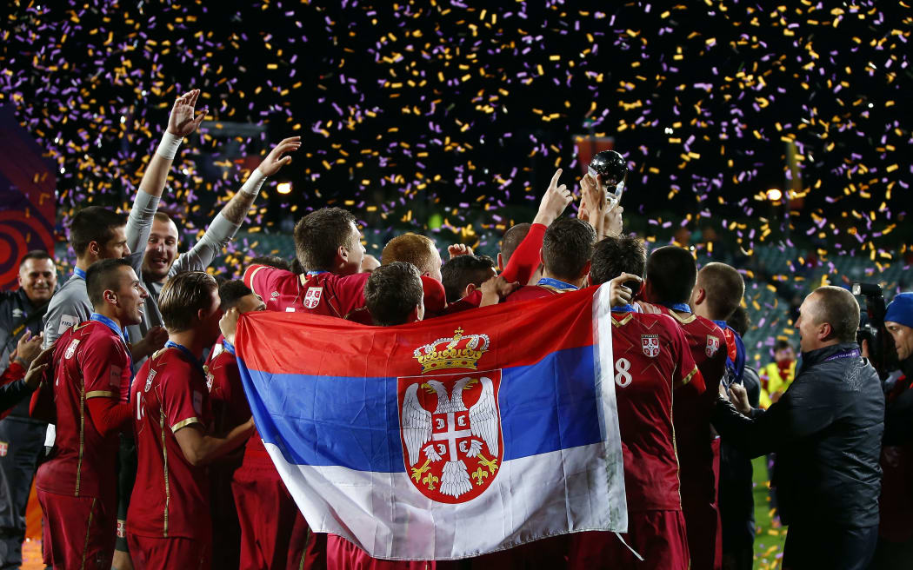

5 Most Popular Sports in SerbiaSports are a significant component of Serbian culture. Despite the small size of the nation, its athletes have achieved success in a variety of sports. Team sports including football, basketball, volleyball, and other team sports are among the most popular sports. Football is the national sport of Serbia. To encourage the growth and development of these activities, the nation has numerous sports resorts and training facilities for a variety of sports. Sports of all kinds are well-liked in Serbia, but some are more so than others. Tennis Tennis has overtaken team sports as the most popular sport in Serbia over the past 10 years, despite the country's preference for team sports. According to the ATP (Association of Tennis Professionals) rankings, Novak Djokovic, the current world no. 7 tennis player in singles, is to blame for the sport's increasing popularity. He has long maintained a position in the top 3, reaching the top spot and holding it for a record 373 weeks. The tennis great has 90 ATP singles titles and 21 Grand Slam titles for men's singles. It seems sense that every young Serbian tennis player aspires to one day be like Novak Djokovic. As FR Yugoslavia's representative, Monica Seles won eight grand slam singles titles and was a former World No. 1 player. Other well-known Serbian tennis players include 2008 French Open champion Ana Ivanovic and Jelena Jankovic. In the WTA rankings, both athletes were ranked first. Nenad Zimonjic and Janko Tipsarevic might also be names you are familiar with. Tennis has become one of the most well-liked sports in Serbia thanks to the efforts of all these players. Football Football is our favorite sport after that. Football is seen by a large majority as being most popular in Serbia. Football is the sport that is the most popular in the nation, despite the fact that the nation may have performed better globally in tennis. The Football Association of Serbia, the largest sporting organization in Serbia, now boasts more than 147,000 registered football players. Since players like Nemanja Matic, Dejan Stankovic, Aleksander Kolarov, and others play for the most prestigious European clubs, Serbia is also known as one of the nations that exports the most footballers worldwide. The national football team, however, does not experience the same levels of success that its players do. Serbia was successful in reaching four of the five FIFA World Cups. In 2013 and 2015, respectively, the national young squad won the U-19 European Cup Championship and the U-20 World Cup. In Serbia, club football is also widely played. The two most well-known clubs in the nation are Red Star Belgrade and FK Partizan Belgrade. In 1991, Red Star won the European and Intercontinental Cup, and in 1966, Partizans reached the final of the European Cup. The Eternal Derby, as the rivalry between the two clubs is known, is one of the most thrilling sports rivalries in the world. The Maracana stadium, home of the Red Star, is the biggest in its vicinity. Basketball Another very popular sport that Serbia excels at is basketball. Serbia's basketball prowess continues to shine on the international stage, with the men's national team achieving remarkable success in 2023. In the FIBA 2023 Basketball World Championship, Serbia secured the coveted first place, adding to its impressive list of achievements. This recent triumph further cements the country's status as a basketball powerhouse. The team's historic victories in the 1998 and 2002 World Championships, coupled with European Championship wins in 1995, 1997, and 2001, have already solidified Serbia's basketball legacy. The women's national team has also created a name for themselves, winning a bronze medal in 2016 and the European Championship title in 2015 and 2021. Serbia's men's 3x3 squad has also performed admirably in the FIBA 3x3 World Cup and Euro Cup, highlighting the nation's overall superiority in basketball. One of Serbia's most well-known basketball players, Nikola Jokic, has had a huge impact on the NBA in recent months. Jokic, a member of the Denver Nuggets, had a stellar NBA season that saw him win the coveted Most Valuable Player (MVP) award of 2023. His position among the league's best players has been cemented by his extraordinary abilities and versatility on the court. Serbian basketball supporters were extremely proud of Jokic's MVP victory in 2021, which also emphasized the nation's long basketball legacy. Over the past 30 years, many Serbian players have entered the NBA, but only a select few, like Jokic, have truly shone on the world basketball scene, raising the prominence of Serbian basketball on a global scale. Volleyball Volleyball is the next sport on the list. Serb soldiers played the sport for the first time in Serbia sometime in 1918. In 1924, Belgrade hosted the first performance of it. Serbia has also dominated volleyball internationally. The men's team took home the gold at the 2000 Summer Olympics and finished second and third three times at the World and European Championships. In 2005 and 2009, it also dominated the FIVB World League. 2016 Olympic women's team silver medalists. Additionally, it won the Euro Championship in 2011, 2017, and 2019 as well as the FIVB World Championship in 2018. The Volleyball Hall of Fame honors players Vladimir Grbic and his brother Nikola Grbic from Serbia. Water Polo Water polo is the final sport. Rugby and handball are two additional prominent sports in Serbia. Serbia began to play water polo at the start of the 20th century. The men's national team of the nation is second only to Hungary in terms of international success. At the Olympics in 2016 and 2020, the team took home a gold medal. It has also three times won the World Championship. |